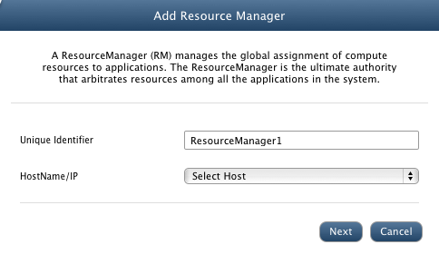
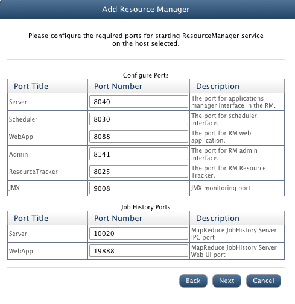
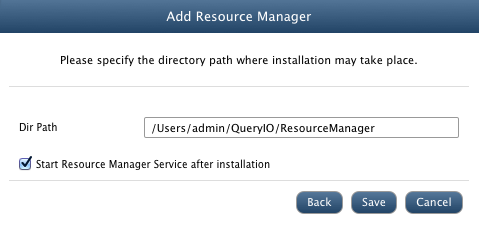
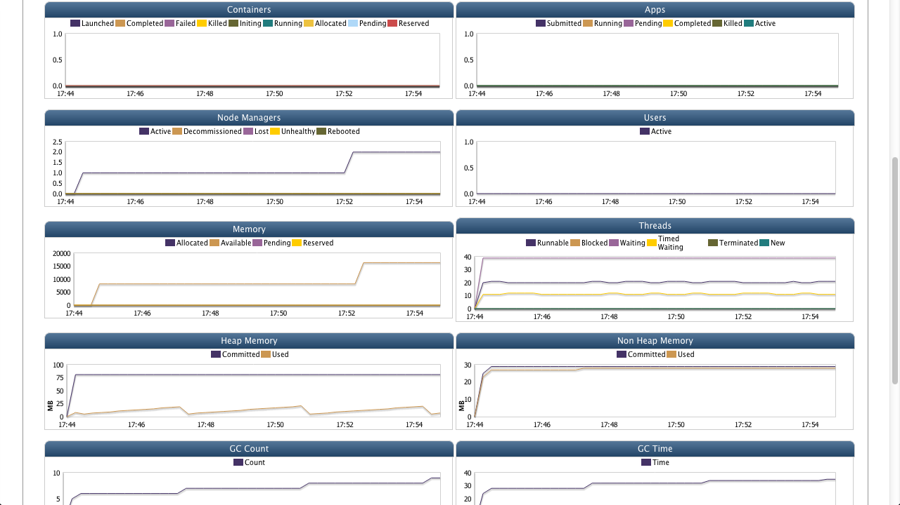

YARN ResourceManager
In this chapter
This chapter explains about ResourceManager and its related features
What is ResourceManager
Hadoop MapReduce is a YARN-based system for parallel processing of large data sets.
A ResourceManager (RM) manages the global assignment of computing resources to applications. The ResourceManager is the ultimate authority that arbitrates resources among all the applications in the system.
All MapReduce applications are submitted to ResourceManager. The ResourceManager is the sole authority to allocate any container to applications.
The allocated Container is always on a single node and has a unique ContainerID. It has a specific amount of Resource allocated.

ResourceManager Details
Following details about ResourceManager are displayed.
- Application Summary: A pie chart displaying application information.
- Status Summary: Application details are displayed here.
- ResourceManager Summary
Status Summary
- Total Apps Submitted: Number of MapReduce Applications submitted to cluster.
- Total Apps Running: Number of MapReduce Applications running on cluster.
- Total Apps Pending: Number of MapReduce Applications pending.
- Total Apps Completed: Number of MapReduce Applications completed processing.
- Total Apps Killed: Number of MapReduce Applications killed.
ResourceManager Summary
- Node: Unique Identifier of the ResourceManager. Click on ResourceManager name to view detailed summary.
- Host: IP address of the host on which ResourceManager is configured.
- Submitted: Total applications submitted.
- Pending: Number of applications still running.
- Completed: Number of applications finished.
- Containers Running: Number of containers running.
- Memory Allocated: Memory space allocated to ResourceManager for running applications.
- Memory Available: Memory space available for containers.
- Memory Pending: The amount of memory pending.
- Memory Reserved: The amount of memory reserved for containers.
- Active Nodes: Number of active NodeManagers.
- Decommissioned Nodes: Number of decommissioned NodeManagers.
- Lost Nodes: Number of NodeManagers lost.
- Unhealthy Nodes: Number of unhealthy NMs.
- Rebooted Nodes: Number of NMs rebooted.
- Logs: Click to view full log file of stdout/stderr logs of ResourceManager.
- Status: Status of Resource Manager as 'Started' or 'Stopped'.
- Monitoring: State of Resource Manager monitoring i.e. whether Resource Manager monitoring is started or stopped or not responding.
Add ResourceManager
To add a new ResourceManager, click on Add button on ResourceManager page.
Enter following ResourceManager details.
- Unique Identifier: Unique ID of the ResourceManager.
- HostName/IP: Select host on which ResourceManager will be configured.
- Click Next.

- Configure Ports: Enter ports for following.
- Server: The port for applications manager interface in the RM.
- Scheduler: The port for scheduler interface.
- WebApp: The port for RM web application.
- Admin: The port for RM admin interface.
- ResourceTracker: The port for RM Resource Tracker.
- JMX: JMX monitoring port.
- Job History Ports: Enter following job related ports.
- Server: MapReduce JobHistory Server IPC port.
- WebApp: MapReduce JobHistory Server Web UI port.

- Dir Path: Installation path for the ResourceManager on selected host.
- Start Resource Manager after installation: Select check box to start ResourceManager after installation.
- Click Save to install resource manager.

Configure ResourceManager
To configure the properties of ResourceManager, select the checkbox against target ResourceManager and click Configure. All configurable properties of ResourceManager will be displayed.
Update the properties and click on save for changes to take effect.
Start, Stop, Delete ResourceManager
Select the ResourceManager and click on Start, Stop or Delete to perform respective function.
Start/Stop Monitoring
JMX monitoring takes place which checks ResourceManager's status, Submitted, Pending and Completed applications, Containers Running, Memory Allocated, Memory Available, Memory Reserved, Memory Pending, Active Nodes, Decommissioned Nodes, Lost Nodes, Unhealthy Nodes and Rebooted Nodes.
To start or stop ResourceManager Monitoring, select the check box against the node and click on Start Monitoring or Stop Monitoring button respectively.
ResourceManager Summary
ResourceManager summary contains:
- Application Summary: A pie chart displaying resource information.
- Status Summary: It has various details about ResourceManager:
- Total Apps Submitted: Number of MapReduce Applications submitted to cluster.
- Total Apps Running: Number of MapReduce Applications running on cluster.
- Total Apps Pending: Number of MapReduce Applications pending.
- Total Apps Completed: Number of MapReduce Applications completed processing.
- Total Apps Killed: Number of MapReduce Applications killed.
- Monitoring Data: Shows monitoring data of the ResourceManager host machine. It uses JVM matrix to display data in form of charts. Time interval between which data is displayed can be varied from 1 day to 360 days.
This data is further used to generate reports and forecast. It can also be used diagnostic purposes.
Various charts displayed are:
- Containers:Number of Launched, Completed, Failed, Killed, Initiating, Running, Allocated, Pending, Reserved containers.
- Apps: Number of Submitted, Running, Pending, Completed, Killed, Active applications .
- Node Managers: Number of Active, Decommissioned, Lost, Unhealthy, Rebooted NodeManagers.
- Users: Number of active users with respect to time.
- Memory: Amount of Allocated, Available, Pending, Reserved Memory with respect to time.
- Threads: Number of Running, Blocked, Waiting, Timed Waiting, Terminated, New threads with respect to time period.
- Heap Memory: Heap memory committed and heap memory used with respect to time in MB.
- Non Heap Memory: Non heap memory committed and used with respect to time in MB.
- GC Count: Total GC Count with respect to time.
- GC Time: Total time required for GC in ms.
- Network: Bytes received and sent through network in bytes/s.
- Disk: Bytes read and bytes written by user in Bytes/s.
- CPU Usage: Amount of CPU usage

Copyright © 2015 QueryIO Corporation. All Rights Reserved.
QueryIO, "Big Data Intelligence" and the QueryIO Logo are trademarks
of QueryIO Corporation. Apache, Hadoop and HDFS are trademarks of The Apache Software Foundation.